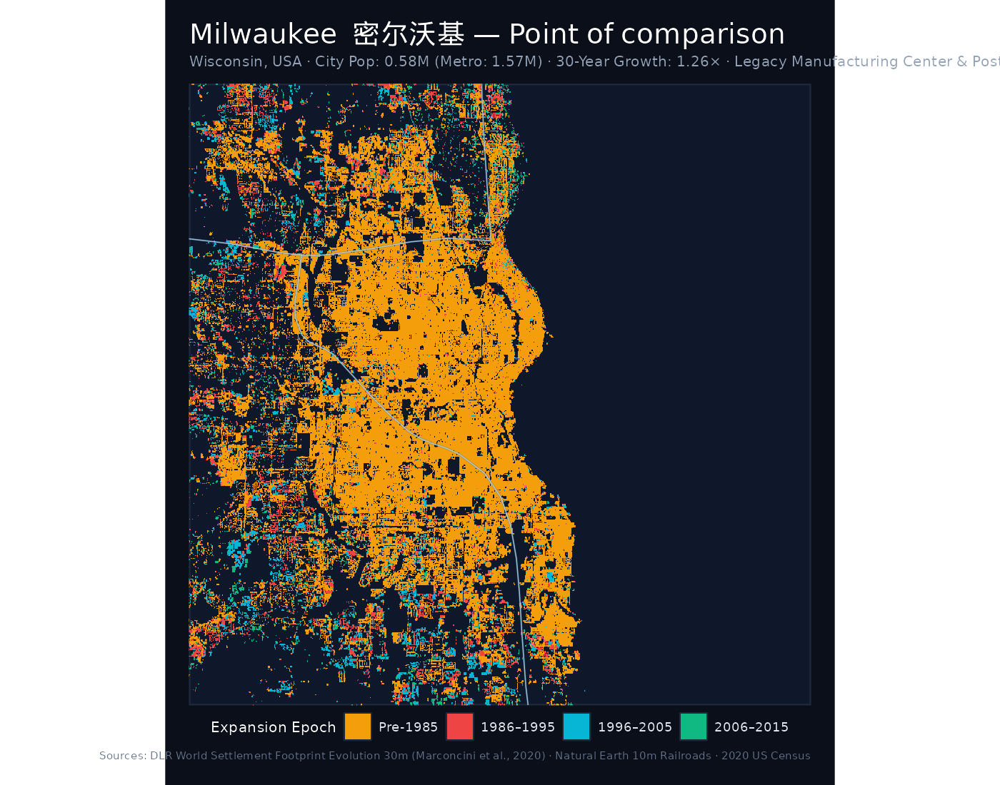
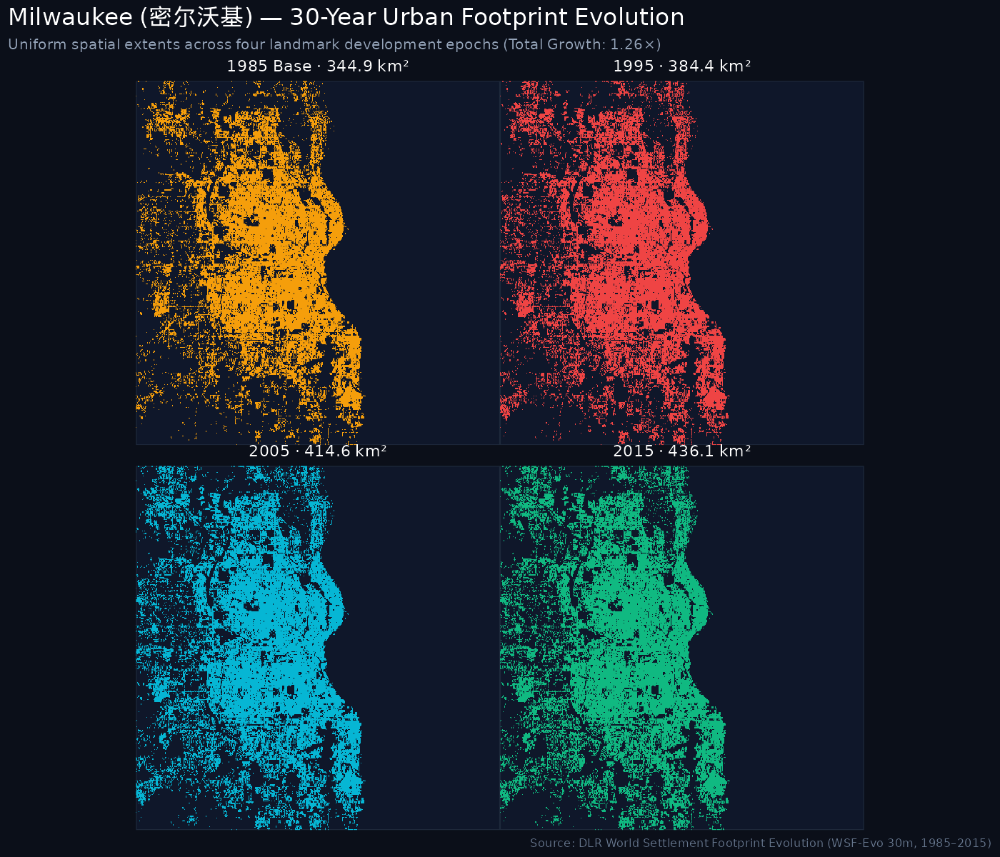
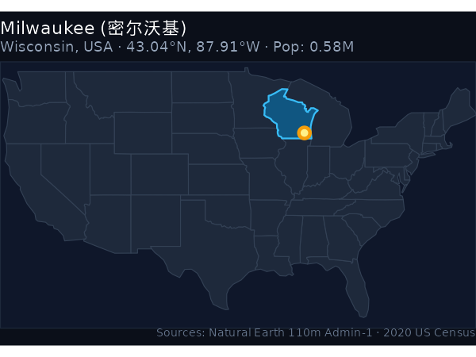
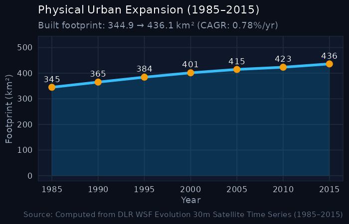

Milwaukee (密尔沃基)
US Point of Comparison · City Pop: 0.58M (Metro: 1.57M) · 30-Year Growth: 1.26× · Wisconsin, USA
1. The urban expansion rings (1985–2015)
The cartographic monograph below maps the physical settlement expansion of Milwaukee across four landmark development epochs:
- ● Pre-1985 Core: Historic urban core and built-up metropolitan area established prior to 1985.
- ● 1986–1995 Wave: Late 20th-century suburbanization and commercial arterial growth.
- ● 1996–2005 Wave: Turn-of-the-century suburban expansion, outer-ring residential developments, and exurban employment centers.
- ● 2006–2015 Wave: Recent outer beltway growth and peri-urban consolidation.

Situated at 43°N latitude on Lake Michigan, Milwaukee shares the cold temperate climate and heavy manufacturing heritage of Northeast China’s Rust Belt (Liaoning, Jilin, Heilongjiang). In 1985, Milwaukee possessed a built footprint of 344.94 km²—comparable in scale to Xi’an (392 km²) and Zhengzhou (316 km²), and significantly larger than Harbin (268 km²) or Fuxin (58 km²).
Between 1985 and 2015, Milwaukee added +91.15 km² to reach 436.09 km² (a 1.26× multiplier, 0.78% CAGR). In stark contrast, Chinese industrial centers facing their own economic restructuring expanded dramatically: Harbin grew 2.62× (+433 km²), Dandong grew 3.12× (+96 km²), and Fuxin grew 2.94× (+112 km²). Milwaukee exemplifies long-term spatial stability in the American Rust Belt.
2. Four-epoch footprint progression
Uniform-scale physical footprint progression maps tracking built-up settlement expansion over time:

3. Geographical location & expansion trajectory
Location in the United States

Thirty-year expansion curve

4. Urban expansion & hierarchy indicators
2020 Population
0.58 M
Metropolitan Archetype
Legacy Manufacturing Center
1985 Baseline Area
344.94 km²
2015 Urban Footprint
436.09 km²
Growth Multiple
1.26×
Annual Growth (CAGR)
0.78%
5. Five-year milestone chronology
| Milestone Year | Urban Footprint (km²) | Growth vs. 1985 Baseline | Share of 2015 Footprint |
|---|---|---|---|
| 1985 | 344.94 km² | 1.00× (Baseline) | 79.1% |
| 1990 | 365.08 km² | 1.06× | 83.7% |
| 1995 | 384.35 km² | 1.11× | 88.1% |
| 2000 | 401.38 km² | 1.16× | 92.0% |
| 2005 | 414.57 km² | 1.2× | 95.1% |
| 2010 | 423.16 km² | 1.23× | 97.0% |
| 2015 | 436.09 km² | 1.26× | 100.0% |
6. Archival cartography & historical map scans
Direct links to open knowledge, semantic geodata, and scanned map collections for Milwaukee:
- 📖 English Wikipedia: Milwaukee — In-depth overview of history, urban development, demographic shifts, and regional governance.
- 🌐 Chinese Wikipedia (中文维基百科): 密尔沃基 — Authoritative municipal boundaries, administrative subdivisions, and local transport infrastructure.
- 🏷️ Wikidata Knowledge Base: Q (Milwaukee) — Semantic knowledge graph entity with geocoordinates, OpenStreetMap tags, and linked administrative entities.
- 🗺️ Wikimedia Commons Map Repository: Maps of Milwaukee — Community-curated media repository containing thematic, administrative, and transport maps.
- 🔍 Scanned Maps & Historical Sheets Search: Explore scanned bitmap and topographic maps of Milwaukee on Wikimedia Commons
- 🗄️ AGSL Historical Map Archive: Access Google Drive repository of AGSL scans
- 🌐 UCSB ArcGIS Online Web Map: View interactive Web Map (item 636bb82ea14944a5b719fc46cf055a53)
7. Sources & methodology attributions
The quantitative and spatial indicators for Milwaukee are synthesized from the following primary sources:
- Urban Footprint & Built-Up Surface: German Aerospace Center (DLR) World Settlement Footprint Evolution (1985–2015). 30m resolution multi-decadal satellite detection (Marconcini et al., 2020, Nature Scientific Data).
- Resident & Metropolitan Population: U.S. Census Bureau, 2020 Decennial Census of Population and Housing. City population: 0.58M; Metropolitan statistical area: 1.57M.
- Rail & Transit Corridors: Natural Earth 1:10,000,000 North America Railroads and passenger transit agency records.
- Administrative Boundaries: Natural Earth Admin-1 State and Province Boundaries.
- Archival Cartography & Historical Surveys: American Geographical Society Library (AGSL) Map Collection & Wikimedia Foundation (Wikipedia, Wikidata, and Wikimedia Commons).